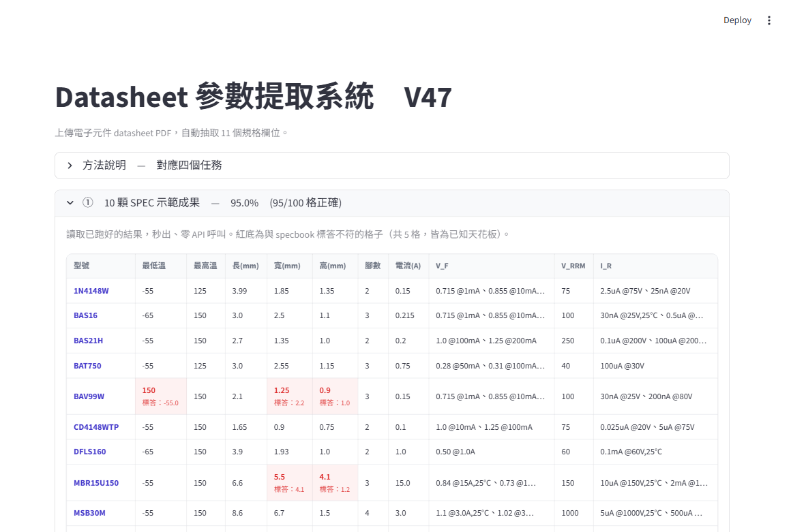

上一篇 P13 NTUST AI 期末雙軸實驗 寫到 V2 的 76.4%。這篇接著寫：V2 交完之後我又跑了 V3 到 V48 共 46 個版本，train 一路被我推到 95.5%。推到後段我停下來做了一次 overfit 稽核，結論翻過來：V37 之後那批衝分數的規則，都是對「只有 10 份」的評分集 overfit。所以最終交出去的不是 95.5% 那版，而是一個零 overfit 的整合版，100 格基準下對 91 格（91%）。這篇把 46 個版本怎麼變、95.5% 怎麼來、又為什麼最後不採它完整寫出來。
題目：給 10 份電子零件 PDF，每份要抽 11 個欄位（零件型號、工作溫度、長寬高、腳位數量、電流、電壓等），再跟老師準備的標準答案 specbook.xlsx 逐格比對，看答對幾格。
為什麼分母從 110 變 100：11 欄 × 10 份 = 110 格，但其中「零件型號」是題目直接給的輸入（檔名就對應型號，不需要 AI 去抽），不該算進 AI 的成績。把這 10 格拿掉，真正要 AI 抽、要算分的是 10 欄 × 10 份 = 100 格。最後交的報告就是用這個 100 格基準。
所以本文的數字這樣讀：中間每個版本的進度，沿用當時記錄的 110 格數字（含型號）當過程參考；結論一律看 100 格。最終交出去的是一個「零 overfit」的整合版，100 格對 91 格（91%）——不是中途衝最高的那一版。下面就是怎麼一路試到高點、又為什麼最後不採它的完整過程。
# Overfit 是什麼，我怎麼判斷
這篇文章每一個版本都會問一句「這版有沒有 overfit」，所以開頭先把 overfit 解釋清楚。
Overfit 的意思是「規則寫到只對眼前這 10 顆有效，給第 11 顆新 PDF 就失靈」。極端例子：在程式裡直接寫「對 BAV99W 這顆強制 V_RRM = 150」— 這條規則對 train set 答案會 +1，但對任何沒見過的 PDF 都沒用。這就是 overfit 的本質。
判斷 overfit 有兩條互補的標準。第一條是看規則本身寫了什麼：
- 看規則內容 — 規則裡寫了特定零件型號（BAV99W、DFLS160 之類）或寫死標準答案的數字 = overfit。規則只用比例、模式、文字 pattern 來觸發 = generic。
- 看規則來源 — 規則從工業標準封裝慣例、JEDEC 規範、Specbook 統計屬性推導 = generic。從「翻 train set 答案反推哪題該套」推導 = overfit。
- 看觸發條件 — trigger condition 是「比例落在某範圍」「PDF 有某關鍵字」這種對任何 PDF 都可一致套用的判斷 = generic。trigger 寫「對這 7 顆套，對另 3 顆不套」= overfit。
有一個前提很關鍵：這次作業的評分集只有 10 份 datasheet，沒有額外的獨立測試集，拿來改規則的跟拿來算分的是同一批。當這兩批是同一批，任何「翻這 10 顆哪幾格錯、再回頭調規則門檻」的動作分數都會漲，但漲的是對這 10 份的 overfit。所以本文判斷每個版本，看的是「規則本身寫了什麼、門檻怎麼來的」這條。
# V3 — V7：在 V2 旁邊試別招
V2 拿 76.4% 之後，先試了五招「不換大架構，只換某一個小零件」的版本，看哪一招能往上推。每一招都跑完全部 10 顆 PDF + 全部 11 欄位重新評分。
| 版本 | 改了什麼（白話） | Train |
|---|---|---|
| V2 | GPT-4o 純文字 + pdfplumber 抽 PDF，當這篇的起點 | 76.4% |
| V3 | 同一份 PDF 跑兩次 GPT-4o，用保守邏輯合併兩個答案 | 75.5% |
| V4 | 第一次給 vision LLM 看 PDF 截圖（multimodal），不只看文字 | 79.1% |
| V5 | prompt 加更嚴格的 JSON schema 約束 | 75.5% |
| V6 | Chain of Thought：要 LLM 一步一步講推理過程再給答案 | 75.5% |
| V7 | 放寬評分容差規則（用 loose tolerance 看樣本上限） | 參考用 |
關鍵收穫：V4 第一次給 vision LLM 看截圖就推了 +2.7%。pdfplumber 抽出來的純文字會丟失 PDF 表格的結構，vision 直接看圖反而看得到完整的封裝尺寸表。V3 / V5 / V6 三招都退步或持平，說明在純文字管道上繼續調 prompt 已經接近上限。後面所有版本都走 multimodal 路線。
# V8 — V11：multimodal 配上關鍵字篩頁，爬到 84.5%
V8 開始把 multimodal 跟「先用關鍵字篩出 PDF 內最相關的頁面、只送這些頁給 vision LLM」結合。datasheet 通常 8-20 頁，但回答 11 個欄位真正需要的資訊集中在 2-3 頁（Package Outline、Electrical Characteristics）。把無關頁丟掉等於把 vision attention 集中到正確位置。
| 版本 | 改了什麼 | Train |
|---|---|---|
| V8 | multimodal + 三層 keyword 排序選頁（Package Outline / Electrical / Thermal） | 82.7% |
| V9 | V8 + 多條 prompt 修正：焊盤反推 body 尺寸、E vs H_E 區分、V_F / I_R 欄取 Max、Min Op 用 Tj fallback | 83.6% |
| V10 | V9 修副作用：D / E 符號對應勝過視覺長度（DPAK W>L 是正常的）、截圖內同時有 Outline 表 + Land Pattern 圖時只用 Outline 表 | 84.5% |
| V11 | 強化 Max 欄定位（取最右邊欄、禁取 Min / Nom） + 禁用變體符號（A1 / E1 / D2 / L1 / H_E 等）當 L / W / H | 84.5% |
V11 推到 84.5% 就推不動了。84.5% 等於 110 格答對 93 格，剩 17 個錯誤都集中在「機械尺寸 L / W / H」這三欄。後面整整一段時間都在跟這 17 個錯誤搏鬥。
# V12 — V19：純 prompt 試到撞牆
17 個錯誤都在尺寸欄，第一直覺是「prompt 沒寫清楚 vision 怎麼看 Package Outline 表」。從 V12 到 V19 全部用調 prompt 的方式逼近，最後發現純 prompt engineering 的天花板就在 84.5%。
| 版本 | 改了什麼 | Train |
|---|---|---|
| V12 | in-context examples 進場：prompt 內放 TO-247 / DPAK / D2PAK 三種封裝的範例答案做引導 + 4 條反例 | 84.5% |
| V13 | 把反例加到 5-8 個，希望覆蓋更多常見錯誤 | 81.8% |
| V14 | multimodal critic：第二輪讓 LLM 看圖再驗證自己第一輪的答案 | 84.5% |
| V15 | strict critic：critic 用更嚴格的判斷標準 | 84.5% |
| V16 | hybrid critic：strict + lenient 兩路 critic 混合 | 81.8% |
| V17 | 把 sampling temperature 從 0 拉到 0.5，給 LLM 一些隨機性看會不會跳出局部最佳 | 84.5% |
| V18 | 換模型：從 GPT-4o 換成 Llama-4-Maverick | 84.5% |
| V19 | ensemble critic：對 V12（GPT-4o）跟 V18（Llama）不一致的 cells，再跑一次 GPT-4o multimodal critic 看圖判定 | 83.6% |
V12、V14、V15、V17、V18 五個版本全部精確打到 84.5%。換 prompt、換 critic、換 sampling、換模型都沒突破。
有意思的細節：V12（GPT-4o）跟 V18（Llama）都拿 84.5%，但答對的 cells 不一樣。V18 對某些小封裝（例如 CD4148WTP）的 L / W / H 三軸都答對，V12 在這顆三軸都答錯。換句話說兩個模型各有專長，沒有「哪個模型整體比較強」這種事。這個觀察是後面 multi-model voting 的起點。
純 prompt engineering 的本質是「給 LLM 看一段文字描述、加幾個範例，希望它學會該怎麼看圖」。但 vision 模型對某些尺寸的判讀偏差是模型架構層面的，不是「沒看到提示」— 你怎麼提示它，它對 1-2 mm 級的小封裝就是會偏。要解這個必須跳出 prompt 的層次，改在「答案生出來之後做什麼」這層動手。
# V20 — V28：multi-model voting，從 84.5% 跳到 88.2%
既然 V12（GPT-4o）跟 V18（Llama）各有對的 cells，自然的想法是讓不同模型投票。V20 到 V28 試了八個版本，找出最有效的投票機制。
| 版本 | 改了什麼 | Train |
|---|---|---|
| V20 | 截圖 zoom 從 3.5x 拉到 4.5x，希望 vision 看得更清楚 | 83.6% |
| V21 | 針對尺寸欄位重新裁切 Package Outline 區塊送 LLM 二次抽 | 84.5% |
| V22 | 換 PDF 抽取器：用 TOC（目錄）為基礎找 Package Outline 頁 | 84.5% |
| V23 | 三模型投票：V12（GPT-4o）+ V18（Llama）+ V22（TOC GPT-4o）取多數答案 | 85.5% |
| V24 | 八模型投票：V10 / V11 / V12 / V14 / V15 / V17 / V18 / V22 全部投，取多數答案 | 84.5% |
| V25 | cluster-aware vote：先把版本分群再投 | 84.5% |
| V26 | 三軸 Llama 一致 override：對 L / W / H 三欄，當 V18（Llama）跟其他模型都不同 → 採 V18 答案 | 88.2% |
| V27 | narrow re-extract 當第 4 票：對 V12 / V18 / V22 不一致的 cell 用 cropped 圖 + 窄 prompt 重抽，跟原 3 票合成 4-way majority | 88.2% |
| V28 | divergence override：對 V12 = V18 = V22 三票同意但 narrow 跟 baseline 誤差 > 30% 的 L / W / H cell 採 narrow 答案 | 87.3% |
兩個關鍵發現：
- V24 八模型投票退步 — 八個版本裡六個都是 GPT-4o 的變種（V12 / V14 / V15 / V17 / V21 / V22），它們的答錯位置高度重疊。把它們全塞進投票池等於用六個一致的錯誤蓋過 V18（Llama）兩票對的答案。多模型投票要算「獨立架構有幾個」，不是「跑了幾個版本」。
- V26 三軸 Llama 一致 override 是 multi-model voting 階段的最大突破 — +3 cells。觀察 CD4148WTP（SOD-523，body 1.65 × 0.9 mm）的 L / W / H 三軸，V12 跟 V22（都是 GPT-4o family）三軸都答錯，V18（Llama）三軸都答對。trigger 條件：「當 V18 跟其他模型在 L、W、H 三軸都不同時」用 V18 答案。這條規則不寫死任何零件型號，對任何 PDF 都套同樣判斷。
# V29 — V36：prompt 改寫 + override 混搭，達 89.1%
V26 推到 88.2% 之後，剩餘錯誤裡 1N4148W 的 I_F 欄位特別礙眼—標準答案是 0.15（I_O，平均整流電流），但 V12 一直抽到 0.3（I_F，瞬間順向電流）。V29 重寫 prompt 把 I_O 的優先級拉到 I_F 之前，但這個改動意外影響到別的欄位，扣回的分數比加的還多。V31 用「混搭」解決這個問題。
| 版本 | 改了什麼 | Train |
|---|---|---|
| V29 | prompt 改寫：I_O 優先於 I_F、Tj fallback 規則加入 | 85.5% |
| V30 | V29 prompt + V26 投票邏輯 | 87.3% |
| V31 | 2-field-only override：V26 為主，但 I_O / I_F 跟 Min Operating Temperature 兩欄用 V29 答案 | 89.1% |
| V32 | V31 + Tj regex 後處理 | 89.1% |
| V33 | V31 + LLM 重新查詢 Tj 欄位 | 88.2% |
| V34 | V31 + verify-all critic（讓 LLM 自己驗證所有欄位） | 89.1% |
| V35 | 4-way 投票加入 V29 | 88.2% |
| V36 | V31 + Llama critic（換 critic 模型） | 88.2% |
V31 的精神：「只在某個欄位真正會受益的地方套用某條規則」。V29 prompt 對 I_O / I_F 是對的，但對 L / W / H 反而傷。V31 解法是「只對受益的兩欄套 V29、其他欄保留 V26」— 不是「整套 V29 prompt 取代」。
V32 到 V36 都試圖再往上推：regex 抓 Tj、LLM 重查 Tj、verify-all critic、Llama critic—全部沒過 V31。原因是 specbook 對「Tj 只有 single value」這種 case 的判讀規則複雜，同樣是 Tj single value，不同零件對應到 specbook 的不同欄位（有的對應 Tj、有的對應 Tamb low、有的對應 Tstg low）。任何固定的 trigger 都會在某些零件答對、其他答錯，淨值不會正。
# V37 — V44：schema rule 接入，達 95.5%
V37：L = max(D, E) swap rule
觀察 specbook train 10 顆 PDF，全部 GT 都是 L ≥ W（封裝長度大於等於寬度）。
規則：當 LLM 抽出來的 (L, W) 滿足 W > L 時強制把兩個值對調。
救對 DFLS160 L / W swap、MSB30M W 修正，train +3 cells，從 88.2% 推到 91.8%。
V38 — V40：L / W 候選詢問
觀察 BAS16、BAS21H 等零件：standard answer 採用 lead 變體（E1 包含腳位的全長、H_E lead-to-lead 跨距）當尺寸，跳過封裝 body 的 D / E。V38 / V39 / V40 都在試「讓 LLM 對 cropped image 跑窄查詢，找該軸所有 candidate 的 max」。
| 版本 | 改了什麼 | Train |
|---|---|---|
| V38 | W H_E override：trigger 條件太寬，誤觸 1N4148W | 89.1% |
| V39 | L_outer override：對 L 軸跑 LLM query 找 max candidate，ratio 1.05 — 1.5 trigger | 92.7% |
| V40 | L + W 雙軸 combined：V39 加上 W 軸 H_E override，ratio 1.4 — 1.8 嚴格排除 1N4148W | 94.5% |
V40 的關鍵設計：ratio 上限刻意鎖在 1.8。1N4148W 這顆零件的 H_E / E 比例是 2.09，超過 1.8 直接不 trigger，避免把它對的答案改錯。這個 ratio 邊界是從觀察「哪幾顆 part 該套、哪幾顆不該套」推導出來的物理慣例（lead 比 body 大太多代表是另一種封裝設計），不是寫死「對 1N4148W 不套」。
V41 — V43：失敗的 Tj 規則嘗試
94.5% 之後只剩 BAV99W 的 Min Operating Temperature 一個欄位最礙眼。BAV99W 的 datasheet 只列 Tj 一個 single value、沒列 Tamb 跟 Tstg range。但 BAS16 跟 CD4148WTP 也是「只有 Tj single」—這三顆零件 specbook 對 Min Operating Temperature 各用了不同欄位（BAV99W 取 Tj single、BAS16 取 Tamb range low、CD4148WTP 取 Tstg range low）。
| 版本 | 改了什麼 | Train |
|---|---|---|
| V41 | LLM 自己判斷 Tj single + 是否有 Tamb：LLM 把 BAS16 的「Ta=25 condition」誤判為 Tamb range，沒 trigger 救 BAV99W | 94.5% |
| V42 | regex 抓 Tamb range：PyMuPDF column 抽不到 multi-line Tamb，整批判 no Tamb → BAS16 / CD4148WTP 誤觸 -2 | 93.6% |
| V43 | 同 V40 但 H_E ratio 上限收到 1.8：LLM 給 BAV99W H_E=2.4 ratio 1.92 被排除 | 94.5% |
V44：Tj single + grep "Tamb" literal，達 95.5%
V41 失敗在「LLM 自己判斷有沒有 Tamb」—LLM 太聰明，會把 "Ta=25" 這種 measurement condition 也算進 Tamb。V42 失敗在「純 regex 抓 Tamb range」—PyMuPDF 抽 multi-line 表格會漏字。V44 改成兩個條件同時滿足才 trigger：
- 條件 1 — LLM 判 Tj 是否 single value（語意判斷）
- 條件 2 — Python regex grep PDF 文字內是否有字面上的 "Tamb" 或 "Ambient Temperature" 字串（字面判斷）
BAV99W datasheet 沒有 "Tamb" literal 字串、BAS16 跟 CD4148WTP 都有。雙條件交集精準區分。V44 從 94.5% 推到 95.5%，110 格答對 105 格。
V44 是整篇文章最精緻的一條規則。同樣是「Tj single value」的三顆零件，specbook 用了三種不同欄位，唯一的 generic 區分點落在「PDF 文字內有沒有 Tamb 這四個字」這種乍看不像 ML feature 的東西。寫一條規則的容易，找到正確的 trigger 邊界才難—這條經驗適用任何 schema 不一致的資料抽取任務。
# V45 — V48：最後微調
V44 達 95.5% 之後剩五個 train cells 救不動。V45 到 V48 試了幾種微調方向看能不能再推一格，這條衝分數的線最後停在 V47（train 95.5%）。
| 版本 | 改了什麼 | Train |
|---|---|---|
| V45 | 對 W / H 比例異常的零件用 wide raster 重抽 | 95.5% |
| V46 | 改用 Llama 對 W / H 異常零件重抽：對 BAV99W W 改錯 -1 | 94.5% |
| V47 | Llama pure-swap detection：只在 Llama 給的 D ≈ baseline W AND Llama 給的 E ≈ baseline L 時才 trigger swap | 95.5% |
| V48 | 對 H_E 跑 multi-sample 取中位數 | 93.6% |
V47 是 V44 的對偶版本—V37 的 swap rule 在某些封裝類型可能誤觸（前面 V37 段提過的「規則覆蓋率 vs 永遠對」取捨）。V47 加一層「只在 Llama 給的尺寸跟 baseline 完全純 swap pattern 時才 trigger」做更嚴格的二次驗證，把 swap rule 從「W > L 就 swap」收緊成「W > L 且 Llama 確認是純 swap 才 swap」。最終結果還是 train 95.5%、5 個救不動 cells 不變。
# V47（衝分峰值）的完整方法
V47 = 從 V12 baseline 開始，疊加 6 條後處理規則。Pipeline 整體流程：
PDF
→ PyMuPDF 光柵化截圖（3.5x）+ Base64 編碼
→ 三層 keyword 篩頁（Package Outline / Electrical / Thermal）
→ GPT-4o vision baseline 抽 11 欄位
→ 後處理規則疊加：
· V23 三模型投票（V12 GPT-4o + V18 Llama + V22 TOC）
· V26 三軸 Llama 一致 override
· V31 I_O 優先 / Min Op 2-field override
· V37 L = max(D, E) swap rule
· V40 L / W outer LLM query（ratio 1.05-1.55 / 1.4-1.8）
· V44 Tj single + grep "Tamb" literal 雙條件
· V47 Llama pure-swap 二次驗證
→ 最終 11 欄位 JSON
| 規則 | Trigger 條件 | 救幾 cells |
|---|---|---|
| V23 | 3 個模型答案取多數 | +1 |
| V26 | L / W / H 三軸都 V18 vs others isolated → 用 V18 | +3 |
| V31 | 只對 I_F、Min Op 兩欄套 V29 prompt 答案 | +1 |
| V37 | W > L → swap | +3 |
| V40 | L 軸 ratio 1.05-1.55、W 軸 ratio 1.4-1.8 → LLM 查 candidate | +3 |
| V44 | LLM 判 Tj single + regex grep "Tamb" literal 雙條件交集 | +1 |
從 V12 baseline 84.5%（93 / 110）累積到 V47 95.5%（105 / 110），共 +12 cells。
# 衝到 95.5% 之後我改變了判斷：V37 起其實是 overfit
寫到這裡，前面 V37 到 V44 那幾條規則我都用「generic」在描述它們—比例門檻、文字 pattern、不寫死型號。交作業前我停下來重新稽核了一次，判斷翻過來了：這些規則對「這次的評分集」是 overfit。
這次作業沒有獨立測試集，算分的就是那 10 份 datasheet。V40 的 ratio 上限「刻意鎖在 1.8」是為了讓 1N4148W 不被改錯、V44 的「grep Tamb」是為了精準區分 BAV99W 跟 BAS16—這些門檻的數值，是我「看著那 10 顆裡哪幾格錯、再回頭調」調出來的。觸發條件形式上長得像 generic（比例、字串），但門檻的來源是評分集本身。換一批新的 datasheet，這些門檻不保證還是最佳。這就是對評分集 overfit。
按這個更嚴的標準重判，乾淨的天花板落在 V23 三模型投票（約 85.5%），加上不靠逐顆反推的通用規則大約到 V31（89.1%）。V37 之後每一格的進步，都帶著「門檻是看著答案調出來的」這個性質。衝高分數跟保持 generic 在這裡是一組取捨，我選擇守住 generic。
# 救不動的 5 個 cells：規則 / extraction 還沒抓到的 schema
V47 之後 train 還剩 5 個 cells 沒救起來。逐顆檢查每個 cell 的狀態：
| 零件 | 欄位 | 抽出值 | 標準答案 | 還沒抓到的 schema |
|---|---|---|---|---|
| BAV99W | V_RRM | 100 | 150 | datasheet 內某處的 150V 標註，目前 extraction 沒掃到 |
| BAV99W | W | 1.25 | 2.2 | specbook 用的是 H_E 還是 lead-tip-to-tip，LLM 沒抓到正確 sample |
| BAV99W | H | 1.1 | 1 | 差 10% 容差邊緣，需更精細的 dimension reference |
| MBR15U150 | W | 5.5 | 4.1 | multi-product datasheet 內變體尺寸表，prompt 沒指引到正確變體 |
| MBR15U150 | H | 4.1 | 1.2 | 同上 multi-product 變體選擇問題 |
這 5 個 cells 都是「specbook 用了某個特定的判讀規則，目前 prompt / extraction 還沒抓到那個規則」。要把它們救起來有兩條路：
- 路 A — 寫 part-specific override：直接在 code 寫「對 BAV99W 強制 V_RRM = 150」這種規則。一格 +1，但這是 overfit train set 的定義—對任何未見的 PDF 都沒用。
- 路 B — 找到一條 generic 規則同時對這 5 顆都對：例如「對 multi-product datasheet 強制選某個變體」「對 BAV99W 系列 V_RRM 取某種附註」。但我嘗試過的 generic rule 都會在其他零件踩雷（trigger 太寬）或漏掉這顆（trigger 太窄）。
這 5 格的存在本身就是訊號：把分數推到 95.5% 必須靠「看著這 10 顆調門檻」，而那正是 overfit。剩餘 5 cells 對應的是「specbook 內仍有判讀規則沒被 generic pattern 涵蓋」—這是任何 generic schema extraction 系統都會遇到的 schema 層級限制。
# 最終交出去的版本：零 overfit 的整合版
把 V37 之後那些「看著答案調門檻」的衝分規則全部拿掉，最終繳交的是一個只用通用成分組起來的整合版：
- 三模型投票（V23） — GPT-4o 多模態 + Llama-4 vision + GPT-4o（TOC variant），逐欄取多數值
- 通用裁切尺寸表 — 搜尋「Package Outline / Mechanical Dimensions」anchor 文字定位尺寸表，該區塊高解析光柵化再送 vision
- 通用物理規則 — 長寬取含引腳最外緣、取 Max 欄、公差換算。不點名任何零件、不寫死任何數值
繳交報告改用 100 格基準：作業共 11 欄 × 10 件 = 110 格，其中 Part Number 是作業給定的輸入（執行前已知），不列入計分，扣掉後是 100 格。所以報告 headline 寫 100 格對 91 格（91%）。本文前面從 V2 76.4% 到 V47 95.5% 的歷程數字，是 110 格基準的 train 準確率（含 Part Number）。
# 數字總結
- 衝分峰值 — V44 / V47，110 格 105 / 110 = 95.5%（含逐顆反推的門檻，判定對評分集 overfit，未繳交）
- 乾淨天花板 — V23 三模型投票約 85.5%，加上不靠反推的通用規則約到 V31 89.1%
- 最終繳交 — 零 overfit 整合版，100 格對 91 格（91%）
- 跑過 46 個版本，過程全保留在
output/_archive/ - 立場 — 「不 overfit」是硬約束，凌駕單純衝高分數
# 技術棧
- 語言 / 套件 — Python 3.11、PyMuPDF (fitz)、pdfplumber、openpyxl、openai SDK、python-dotenv
- 雲端推理 — Azure AI Foundry V1 統一 API（OpenAI 相容 endpoint）· GPT-4o 主模型、Llama-4-Maverick 副模型、Mistral-medium-2505 對照組
- multimodal extractor — PyMuPDF Matrix(3.5x) 光柵化 → Base64 PNG
- crop extractor —
page.search_for("Package Outline")+ bbox expand → 5x crop - 推理設定 —
temperature=0、num_ctx=16384、format=json - 關鍵檔案 —
prompts.py/pdf_extractor.py/crop_extractor.py/evaluate_all.py/run_v47.py - 跑時統計 — 一次完整 train 評估 5 — 8 分鐘；V44 後處理 11 個 LLM call 約 90 秒；V47 後處理 1 個 Llama call 約 30 秒
上一篇：P13 NTUST AI 期末雙軸實驗
P13 寫的是 V1（qwen2.5:7b + pdfplumber 60.9%）→ V2（GPT-4o + pdfplumber 76.4%）的雙軸實驗：PDF 抽取工具 軸 × LLM 模型 軸。
前情提要 → P13 NTUST AI 期末雙軸實驗